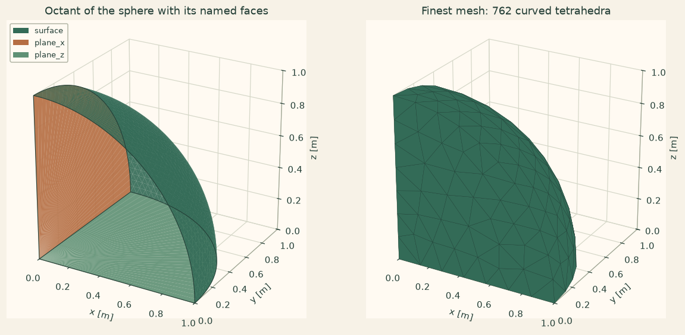

Docs › Examples › Mandel-Cryer effect in a poroelastic sphere
Poroelasticity · 2D-axisymmetric
Mandel-Cryer effect in a poroelastic sphere
A water-saturated sphere suddenly loaded on its draining surface: the centre pore pressure first rises above its initial value before it decays.
Run locally with OneSimulation. The example downloads are free. Running them requires an activated runtime. Runtime Alpha 0.2.1a7 · CPython 3.13 on macOS (Apple Silicon), Ubuntu 22.04 (x86-64), and Windows x64. Installation and activation · View pilot plans. Scope of the reference checks.

What it computes
A quarter of the sphere is read from a STEP file and cut to its meridian plane; OneSimulation solves fully coupled axisymmetric Biot poroelasticity with quadratic triangles on three meshes and BDF2 time stepping started by a backward-Euler step. The script that builds the STEP file comes with the notebook.
What it checks
The peak of the centre pressure, 1.5745 times the undrained pressure at T = 0.062, deviates from Cryer's exact series (1.5748 at T = 0.063) by -0.02 % on all three meshes; the whole centre history after T = 0.01 lies within 0.001 p0 of the series and the radial profiles at T = 0.006, 0.064 and 0.25 follow it.
Geometry
The notebook starts at the import of the CAD file mandel_cryer_consolidation.step: STEP (AP242), readable by any CAD program, with the names of the faces that the boundary conditions use. Put it next to the notebook.


The geometry script
The script mandel_cryer_consolidation_geometry.py builds the geometry with the CAD objects of OneSimulation and writes the file. Change a dimension there, run it, and run the notebook again.
"""Geometry of the OneSimulation example "Mandel-Cryer effect in a consolidating sphere".
Builds the upper half of one half of the soil sphere (radius 1 m: x >= 0, z >= 0) as a solid of
revolution with the CAD objects of OneSimulation and writes mandel_cryer_consolidation.step. The
quarter disc that is revolved names the faces: surface (the draining sphere), equator (the plane
z = 0) and axis (the flat face through the axis of symmetry z). The example computes on the
meridian plane y = 0, with x the radius and z the height.
"""
import numpy as np
from onesim.cad.d2 import Path, Profile, Segment
from onesim.cad.d3 import Revolution
radius = 1.0
outline = Path(
(0.0, 0.0),
(
Segment((radius, 0.0), name="equator"),
Segment((0.0, radius), center=(0.0, 0.0), name="surface"),
Segment((0.0, 0.0), name="axis"),
),
)
quarter = Revolution(profile=Profile(outline), angle=np.pi).rotated(
(0, 0, 1), -np.pi / 2
)
quarter.save("mandel_cryer_consolidation.step")The notebook
The complete notebook, cell by cell. Run it to produce the figures and the comparison printout.
A sphere of saturated soil, radius \(a=1\) m, is loaded at \(t=0\) by a uniform surface pressure \(P=100\) kPa and is free to drain through its surface. At the instant of loading the water cannot escape, so the load is carried by an undrained pore pressure \(p_0\) that is uniform in the whole sphere. Then the outer shell drains first, consolidates and contracts. The contracting shell squeezes the still undrained core, and the core pore pressure rises above \(p_0\) before it finally decays. This non-monotonic response, impossible in uncoupled (Terzaghi-type) diffusion, is the Mandel-Cryer effect (J. Mandel, Géotechnique 3, 287, 1953; C.W. Cryer, Q. J. Mech. Appl. Math. 16, 401, 1963).
The physics is Biot's theory of poroelasticity:
with displacement \(\mathbf u\), pore pressure \(p\), fluid content \(\zeta\), Biot coefficient \(\alpha\), storage coefficient \(S\) and mobility \(\kappa/\mu_f\).
The sphere and its load are symmetric about the \(z\) axis, so the model is axisymmetric: the fields depend on the radius \(x\) and the height \(z\) of the meridian plane only, and every integral carries the weight \(2\pi x\). One quarter of the sphere comes from the CAD file mandel_cryer_consolidation.step, written by mandel_cryer_consolidation_geometry.py with the CAD objects of OneSimulation as a quarter disc revolved by 180°; the model is its meridian plane, the quarter disc. Its sides keep the names of the faces they were cut from:
| side | mechanics | flow |
|---|---|---|
surface, \(r=a\) | total normal traction \(-P\) | drained, \(p=0\) |
equator, \(z=0\) | roller (\(u_z=0\)) | no flow |
axis line \(x=0\), where the faces start and end meet | axis of symmetry | axis of symmetry |
Material. A soft clayey silt: drained Young's modulus 10 MPa, drained Poisson's ratio 0 (the case with the strongest effect), Biot coefficient 1, permeability \(10^{-14}\) m², water viscosity \(10^{-3}\) Pa s, porosity 0.4 and water bulk modulus 2.2 GPa. Pressures are in MPa and times in hours.
Reference. Cryer's exact series for the pore pressure \(p(r,t)\), with the compressibility of the water kept.
import numpy as np
from onesim.cad.exchange import load
from onesim.meshing import TriangularMesher
from onesim.numerics import Numerics
from onesim.numerics.fem import FiniteElement, Lagrange, Nitsche
from onesim.numerics.linear import SparseDirect
from onesim.numerics.nonlinear import Newton
from onesim.numerics.time import BDF, BackwardEuler
from onesim.physics.geotechnics import (
BiotConsolidation,
BiotFixedComponent,
BiotNormalTraction,
PoreFluidFlux,
PrescribedPorePressure,
)
from onesim.results.comparisons import convergence
from onesim.simulation import Problem, Simulation
from onesim.simulation.initial_conditions import InitialValue
from onesim.visualization import plots, theme
from scipy.optimize import brentq
theme.set()Geometry and mesh
load returns the quarter sphere with its named faces; section with the plane \(y=0\) gives the meridian plane, whose sides keep the names of the faces they were cut from. Three triangle meshes halve the cell size from one to the next.
quarter = load("mandel_cryer_consolidation.step")
faces = quarter.boundaries
meridian = quarter.section((0, 1, 0))
sides = meridian.boundaries
radius = meridian.size[0]
sizes = [0.10, 0.05, 0.025]
meshes = [TriangularMesher(target_size=size).generate(meridian) for size in sizes]
fig = plots.figure(1, 2, size=(13, 6))
plots.geometry(
quarter,
selection={"draining surface": faces.surface, "equator": faces.equator},
labels=False,
camera=plots.Camera(elevation=25, azimuth=-60),
title="Quarter of the sphere with its named faces",
ax=fig[0],
)
plots.mesh(
meshes[1],
groups=("all",),
legend=False,
title=f"Meridian plane, middle mesh: {meshes[1].cell_count} triangles",
ax=fig[1],
)
plots.show()Model
The undrained pore pressure \(p_0\), the consolidation coefficient \(c\) and the consolidation time \(a^2/c\) follow from the material. The same problem runs on the three meshes with second-order BDF steps of \(0.002\,a^2/c\) after a backward-Euler start.
load_pressure, youngs_modulus, storage, mobility = (
0.1,
10.0,
0.4 / 2.2e3,
1e-14 / 1e-3 * 1e6 * 3600.0,
)
stiffness_ratio = youngs_modulus * storage + 1
undrained = load_pressure / (stiffness_ratio / 3 + 2 / 3)
consolidation_time = radius**2 * (storage + 1 / youngs_modulus) / mobility
model = BiotConsolidation(
domain=meridian.domain(),
kinematics="axisymmetric",
youngs_modulus=youngs_modulus,
poisson_ratio=0.0,
biot_coefficient=1.0,
specific_storage=storage,
permeability=mobility,
fluid_viscosity=1.0,
)
problem = Problem(
name="Cryer's sphere",
geometry=meridian,
physics=(model,),
boundary_conditions=(
BiotFixedComponent(physics=model, boundary=sides.equator, component="z"),
BiotNormalTraction(physics=model, boundary=sides.surface, value=-load_pressure),
PrescribedPorePressure(physics=model, boundary=sides.surface, value=0.0),
PoreFluidFlux(physics=model, boundary=sides.equator, flux=0.0),
),
initial_conditions=(InitialValue(model.fluid_content, 0.0),),
)
numerics = Numerics(
spatial=FiniteElement(
element=Lagrange(2), boundary_enforcement=Nitsche(penalty=16)
),
linear_solver=SparseDirect(),
time_integrator=BDF(order=2, startup=BackwardEuler()),
nonlinear_solver=Newton(
linear_solver=SparseDirect(),
jacobian="analytic",
relative_tolerance=1e-6,
absolute_tolerance=1e-10,
),
)
pressures = [
Simulation(problem=problem, mesh=mesh, numerics=numerics)
.run(
start_time=0.0,
end_time=0.3 * consolidation_time,
time_step=0.002 * consolidation_time,
)
.field(model.pore_pressure)
for mesh in meshes
]
pressure = pressures[-1]
histories = [
np.ravel(field.time_series([[0.0, 0.0]])[1]) / undrained for field in pressures
]
time = pressure.times / consolidation_timeReference: Cryer's series
With \(\eta=4\mu\alpha\beta/(3K)\) the roots \(\xi_n\) of \((1+\eta)\,\xi^2\sin\xi=3\eta\,(\sin\xi-\xi\cos\xi)\) give the pore pressure as a sum of decaying modes.
def cryer(T, r=0.0, terms=400):
"""Pore pressure p / p0 of the exact solution at the radii r / a (rows) and the times T = c t / a² (columns)."""
eta = 2 / stiffness_ratio
equation = lambda xi: (1 + eta) * xi**2 * np.sin(xi) - 3 * eta * (
np.sin(xi) - xi * np.cos(xi)
)
grid = np.linspace(1e-6, (terms + 2) * np.pi, 200 * (terms + 2))
xi = np.array(
[
brentq(equation, grid[i], grid[i + 1], xtol=1e-15)
for i in np.flatnonzero(np.diff(np.sign(equation(grid))))[:terms]
]
)
cot, g = 1 / np.tan(xi), (1 - xi / np.tan(xi)) / xi**2
slope = -3 * eta * ((xi / np.sin(xi) ** 2 - cot) / xi**2 - 2 * g / xi) / (-2 * xi)
amplitude = (1 + eta) / (-(xi**2) * slope)
rr = np.maximum(np.atleast_1d(r), 1e-12)[:, None]
return (amplitude * (1 - np.sin(xi * rr) / (rr * np.sin(xi)))) @ np.exp(
-np.outer(xi**2, np.atleast_1d(T))
)Comparison with the reference
The centre pressure over time on the three meshes, its peak, and the mesh study of the peak.
exact_time = np.linspace(0.004, 0.3, 1481)
exact_centre = cryer(exact_time)[0]
peaks = [history.max() for history in histories]
study = convergence(peaks, sizes)
print(
f"undrained pore pressure p0 = {1e3 * undrained:.2f} kPa, consolidation time a²/c = {consolidation_time:.2f} h"
)
print(
f"exact peak of the centre pressure: {exact_centre.max():.4f} p0 at T = {exact_time[exact_centre.argmax()]:.4f}"
)
print(
"cell size [m] triangles peak [p0] deviation time of the peak T largest deviation for T >= 0.01 [p0]"
)
for size, mesh, history, peak in zip(sizes, meshes, histories, peaks):
error = np.abs(history - cryer(np.maximum(time, 1e-9))[0])[time >= 0.01].max()
print(
f"{size:13.2f} {mesh.cell_count:12d} {peak:11.4f} {100 * (peak / exact_centre.max() - 1):+10.2f} % {time[history.argmax()]:20.3f} {error:14.4f}"
)
print(f"change of the peak between the two finest meshes {100 * study.change:.2f} %")Figure
The pore pressure in the meridian plane shortly after loading and at the peak, the centre pressure over time, and radial profiles along the 45° ray of the meridian plane at three times.
over_undrained = lambda p, position: p / undrained
shown = {
T: float(pressure.times[np.argmin(np.abs(time - T))]) for T in (0.006, 0.064, 0.25)
}
diagonal = np.linspace(0.0, 0.999 * radius, 25)[:, None] * np.ones(2) / np.sqrt(2)
r = np.linspace(0.0, 1.0, 200)
fig = plots.figure(2, 2, size=(14, 11))
for panel, T in zip((fig[0], fig[1]), (0.006, 0.064)):
plots.surface(
pressure,
time=shown[T],
component=over_undrained,
limits=(0.0, 1.6),
contours=8,
subdivisions=3,
xlabel="radius x [m]",
ylabel="height z [m]",
label="pore pressure p / p0",
title=f"Meridian plane at T = c t / a² = {T}",
ax=panel,
)
plots.line(
y={
f"simulation, {mesh.cell_count} triangles": (time[1:], history[1:])
for mesh, history in zip(meshes, histories)
},
reference={"exact series (Cryer)": (exact_time, exact_centre)},
hlines={"undrained pressure": 1.0},
scale="logx",
xlabel="T = c t / a²",
ylabel="centre pore pressure p / p0",
title="Mandel-Cryer effect at the centre",
legend="lower left",
ax=fig[2],
)
plots.line(
points={
f"T = {T}": (
np.linalg.norm(diagonal, axis=1) / radius,
np.ravel(pressure.evaluate(diagonal, time=t)) / undrained,
)
for T, t in shown.items()
},
reference={
f"T = {T}": (r, cryer(t / consolidation_time, r)[:, 0])
for T, t in shown.items()
},
xlabel="r / a",
ylabel="pore pressure p / p0",
title="Radial profiles: simulation (markers), exact (dashed)",
legend="lower left",
ax=fig[3],
)
plots.show()Going further
Raise Poisson's ratio to see the overshoot shrink (Cryer's solution gives about 1.31 \(p_0\) for \(\nu=0.25\)); make the constituents more compressible to weaken the effect; or change the radius in mandel_cryer_consolidation_geometry.py, write the STEP file again and see the consolidation time grow with \(a^2\).